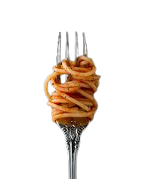

MON PREMIER
MON DEUXIEME
Les pâtes font partie des recettes incontournables.
Elles plaisent aux petits comme aux plus grands.
Plutôt que de vous contenter de pâtes natures ou au beurre,
pourquoi ne pas y ajouter de délicieux légumes ?
Cette recette vous propose d'utiliser les tomates cerises
et les asperges vertes pour un plat complet végétarien délicieux.
